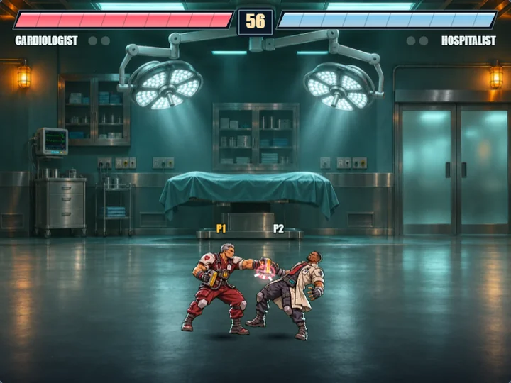

// Creation interview
Hospital Kombat
Who would win: ortho or derm? A nostalgic fighting game settles it.

“It’s affectionate teasing, not a knock on any specialty (except the ortho bros).”
ClaudeHow does a fighting game about medical specialties happen?
BrandonA friend once asked me, “Who would win, a bear or a gorilla?” Somehow that made me ask the same question about medical specialties. I’d been on Reddit, really getting into the tropes of each specialty. I also grew up on the Sega Genesis, and Mortal Kombat was one of my favorite games. Then I came across a prompt for making video games with Claude in an AI newsletter I subscribe to (Superhuman, by Zain Khan), and figured I’d give it a shot.
// Hospital Kombat is an original game. Its characters, art and moves are its own, inspired by the fighting games its maker grew up with.
ClaudeWho is it for?
BrandonClinicians and trainees who want a laugh, or anyone who wants some nostalgic fun.
ClaudeWhat can you do in it?
BrandonYou can play as nine specialties: Ortho Bro (orthopedic surgery), Nephrologist, Anesthesiologist, Hospitalist, Family Medicine, Cardiologist, OB/GYN, Dermatologist and Radiologist. The version on the site now is the Night Shift Edition, an upgrade with painted hospital arenas, new fighter art, redesigned Final Procedures, a matchup screen before each fight and a licensed fight soundtrack.
ClaudeWhat’s a Final Procedure? Do you have a favorite?
BrandonIt’s each fighter’s finishing move. My favorite is the hospitalist’s, called Discharged! When the opponent is nearly beaten, the hospitalist points them toward the door. A wheelchair rolls in behind them, they sit down, and they’re wheeled off the screen. A big “DISCHARGED” stamp lands, and the status on screen flips from “PROCESSING” to “COMPLETE.” The victory line: “Out before noon. Case management is thrilled.”
It’s my favorite of the nine, because hospital medicine is my future specialty.
ClaudeWhat didn’t work at first?
BrandonClaude (Opus 5.5) was phenomenal at building the game engine, but the graphics looked terrible. So I had ChatGPT work on the graphics on its own, and that gave the polished look you see now. ChatGPT worked really well with Claude to make sure the new art also ran smoothly. I did it as a series of handoffs between them.
ClaudeHow long did it take?
BrandonAbout six hours in total.
ClaudeWhat’s been the hardest part?
BrandonOnline play. I’m working on making it possible to send friends a link, so you can crush your resident colleagues in other specialties. My dev team is handling the details. I recently bought a computer just to run my AI models as a dev team, so hopefully they’ll soon iterate without me passing work between them.
ClaudeHow has it gone over?
BrandonI’ve shown it to my whole chief resident class, a handful of attendings and all my friends, about 20 people. Everyone, even the non-medical people, absolutely loves it. I think there’s a cool nostalgia factor.
“Many have tried, but no one has made it to the end!”
ClaudeAny caveats?
BrandonIt’s affectionate teasing, not a knock on any specialty (except the ortho bros).
ClaudeWhat’s next, and how can members help?
BrandonOnline multiplayer is next. Members can suggest new specialties for the roster.
> Play Hospital Kombat > Suggest a specialty